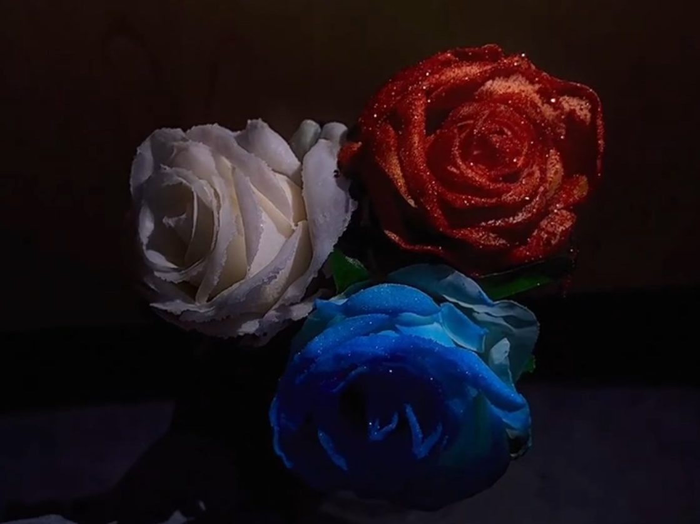
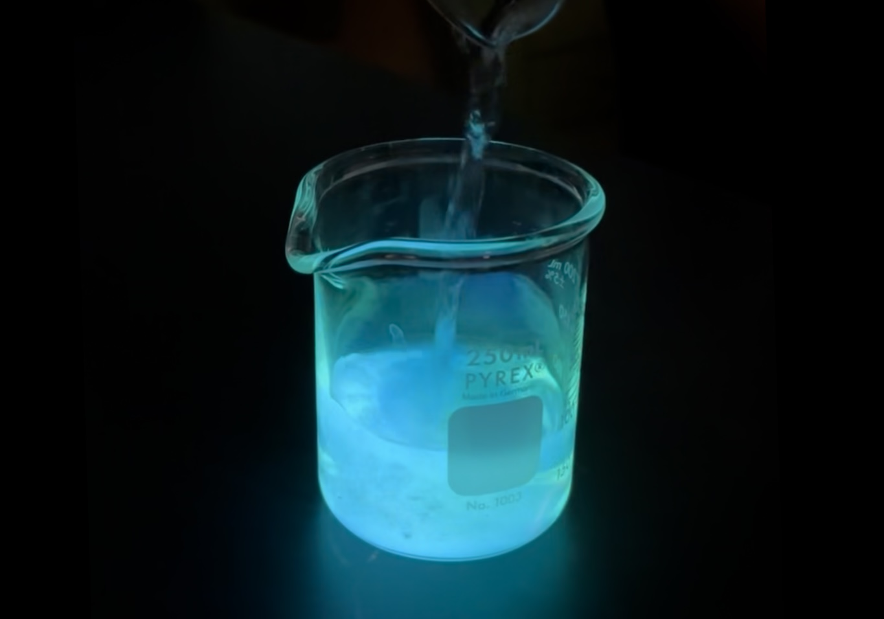
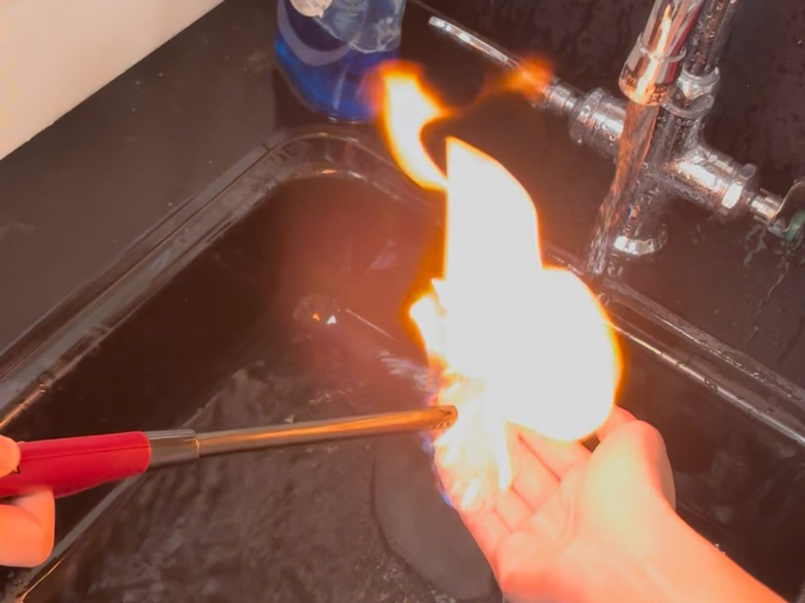
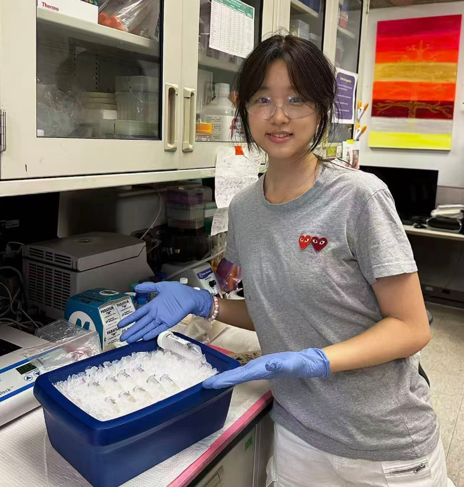
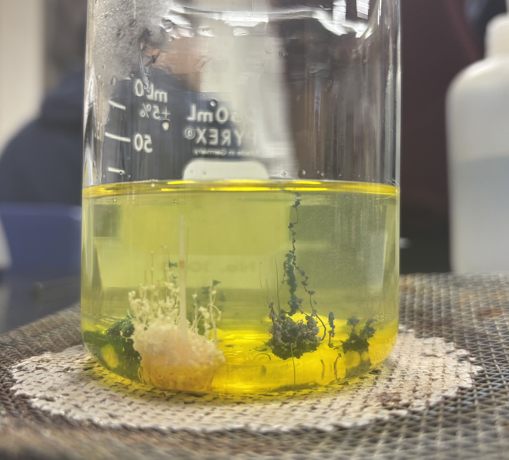
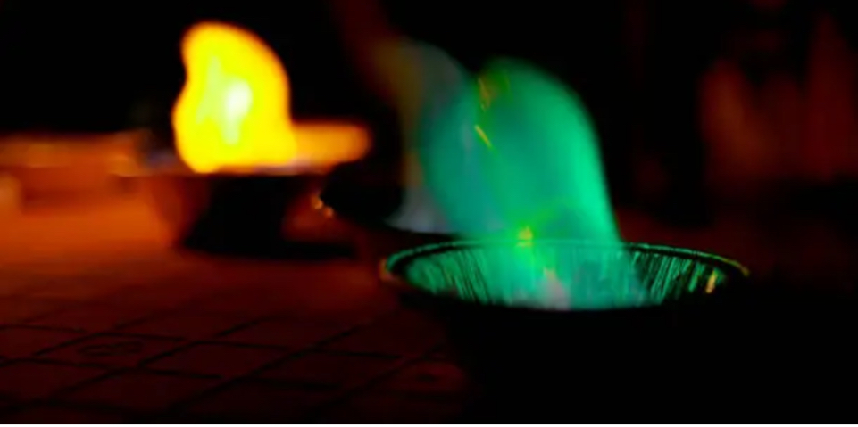
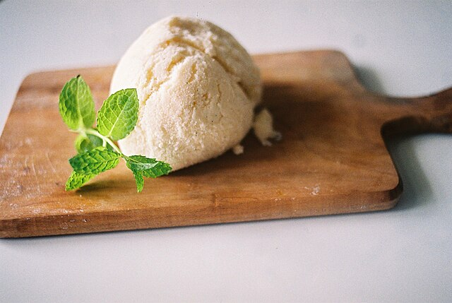

Experiment 01
Crystal Roses
Crystal Roses shows how a chemical coating can change the surface of a flower. The finished rose looks delicate, but the result comes from careful timing and a visible reaction.
Click here to learn moreAmy Yao
A visual lab portfolio arranged like a small atelier: collected experiments, observations, and reaction studies.
View selected work
Observe, record, explain.
Gallery



Bio

Hi, I am Amy. This website is a small collection of chemistry experiments from class. I wanted the page to feel simple, organized, and easy to read, while still showing the parts of chemistry that feel surprising.
The following sections include short explanations of what happened, what I noticed, and what each experiment helped me understand.
Lab work
Experiment 01
Crystal Roses shows how a chemical coating can change the surface of a flower. The finished rose looks delicate, but the result comes from careful timing and a visible reaction.
Click here to learn moreExperiment 02
Chemiluminescence happens when a chemical reaction gives off light. In this experiment, the liquid glowed blue-green without needing a flame or a light bulb.
Click here to learn moreExperiment 03
This demonstration showed how combustion and heat transfer work. The most important part was controlling the conditions and paying attention to safety before anything was lit.
Click here to learn moreExperiment 04
Chemical Kingdom formed small structures inside the liquid, almost like tiny underwater plants. The experiment showed how reactions can build shapes as materials move through a solution.
Click here to learn more
Experiment 05
Fireball was a dramatic combustion demonstration. The bright burst made the release of heat and light easy to see, while also showing why controlled setup and distance matter.
Click here to learn more
Experiment 06
Aurora used colored flames to create a row of bright colors. It connected the colors we see to the different substances involved in the reaction.
Click here to learn more
Experiment 07
Carbon Snake shows how a reaction can create a growing black column of carbon-rich material. The shape makes the chemical change feel almost sculptural as it expands.
Click here to learn more
Experiment 08
Elephant Toothpaste uses a catalyst to break down hydrogen peroxide quickly. The foam shows oxygen gas being released and trapped as bubbles.
Click here to learn more
Experiment 09
Ice Cream uses salt and ice to cool a sweet milk mixture quickly. The experiment shows freezing point depression in a way that is easy to taste and observe.
Click here to learn more
This page is designed as a calm visual record of experiments: simple, image-led, and organized like a small studio portfolio.